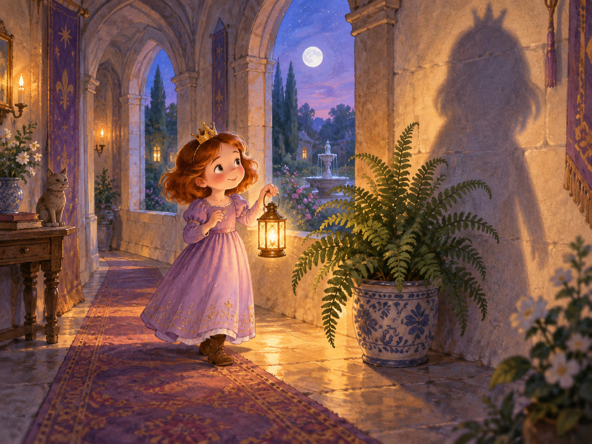

The picture could not load. You can still read the story below.
01 / 03
Who’s there?
At bedtime, Princess Ellie carried her lantern through the castle. Beside the fern, a tall shadow wore a pointy crown. Ellie stopped. “Hello?” she whispered. The shadow was very quiet.
Look closely. What does the shadow’s crown remind you of?